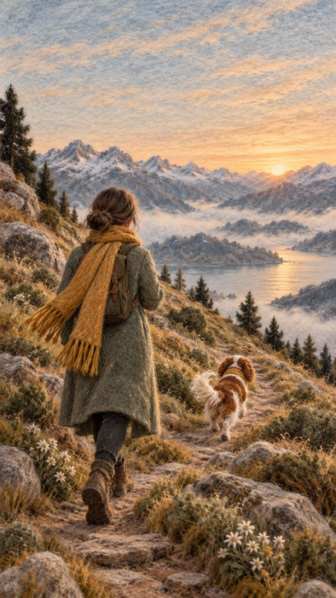

Твой путь в новой стране
Дом, который строится заново
Переезжая, ты оставляешь не только квартиру. Остаётся привычный ритм, люди, которым можно позвонить ночью, язык, на котором ты шутишь, работа, за которую тебя уважали. На новом месте этот невидимый дом приходится строить заново, снизу вверх.
Вот как обычно проходит этот путь. Восемь стоянок, и на каждой свои трудности, свои вопросы и то, что помогает идти дальше. Нажми на стоянку, чтобы узнать о ней больше.

Снизу вверхНижние ступени держат верхние. Пока не высыпаешься, трудно думать о своём деле.
Это не оценкаПервая ступень не хуже восьмой, так же как фундамент не хуже крыши.
Переезд сдвигает внизДома ты могла стоять высоко. Здесь многое приходится строить сначала, и это не слабость.
Спуститься — нормальноПосле поездки домой или болезни ребёнка снова становится трудно. Это часть пути.
Ты переехалаЧемоданы распакованы, документы поданы. Отсюда начинается тропа.
Одна жизнь«Здесь» и «там» больше не два лагеря, а одна жизнь.
Где ты сейчас на этом пути?
Чаще всего кажется, что надо сразу на пятую ступень: работа, деньги, своё дело. А по-настоящему поскрипывает одна из нижних. Тест покажет, какая ступень держит тебя, а какая просит внимания. На знакомстве разберёмся вместе, с чего начать именно тебе.